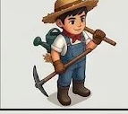

🎥 Mode Kamera: Birds-Eye Overview
🐔
Tutorial
Hewan akan secara otomatis menghasilkan bahan mentah di tanah (Ayam ➔ 🥚 Telur, Sapi ➔ 🥛 Susu, Domba ➔ 🧶 Wol). Dekati untuk menariknya dengan magnet panen ke ransel.
Berdiri di atas lingkaran SETOR di depan mesin untuk memproses bahan mentah menjadi barang bernilai tinggi (🥫 Mayones, 🧀 Keju, 🧵 Kain). Ambil hasilnya di lingkaran AMBIL!
Berdiri di lingkaran MUAT TRUK 📦 untuk memindahkan muatan ke bak truk. Lalu berdiri di KIRIM TRUK 🚀 atau tekan Spasi untuk memberangkatkan truk dan dapatkan gelontoran uang tunai!
Game ini tetap menghitung hasil produksi ternak Anda saat browser ditutup. Begitu Anda kembali, hasil panen langsung menanti!
Ternak Anda tetap aktif berproduksi saat Anda offline!
Hasil panen offline telah siap di area kandang hewan. Kumpulkan dan olah di pabrik untuk keuntungan maksimal!
